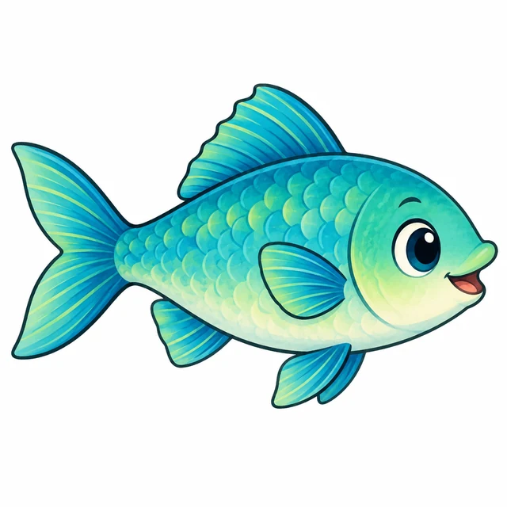
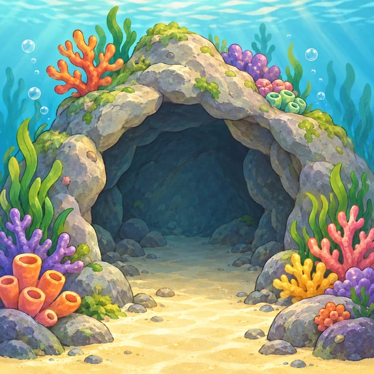

115 上學期 · 三年級 · 第 03 週
滑鼠選一選 🖱️
先學會滑鼠三招，再看影片、答問題，最後挑戰英文小打字。
正在準備活動；若等候太久，請告訴老師。
暖身 · 0～4 分鐘
先複習數字，再找英文字母
4 小題，照順序完成
先接續上週的數字輸入，完成兩題後，先找英文字母，再輸入一個英文單字。
第 1 題：點一下輸入框，看到小直線後，使用右邊的數字鍵輸入 123。
第一站 · 4～11 分鐘
拖曳搬家
按住、移動、放開
每關把一張單字卡拖到圖片的家，練習三種不同方向。完成後，再按「下一關」。

fish
魚的珊瑚洞第 1 關：把 fish 往右下方拖到魚的家。
課本參考：S088 p.40「拖曳、移動」。
第二站 · 11～17 分鐘
框選，再整群搬家
先放開完成框選，再拖一次
框選：請從空白處按住左鍵，框選 mia、abu、fine 這三張卡，不要選到 name、team。放開滑鼠後，再從任一張已選取的卡片，將整群拖到目標區。
只選 mia、abu、fine，共 3 張；不要選到 name、team，再把整群拖進目標區。
課本參考：S088 p.42「框選與移動物件」。`Ctrl` 多選是本課補充操作。
第三站 · 17～27 分鐘 · 全班一起
看影片，再逐題闖關
影片約 55 秒
先把手離開鍵盤和滑鼠。看完影片後一次回答一題；答錯可以依提示再選。
老師播放：使用手機、平板的注意事項答完後抬頭、伸展肩膀，讓眼睛離開螢幕 30～60 秒。
影片內容：昏暗環境、行進中使用、低頭姿勢、連續使用 30 分鐘後休息 5～10 分鐘。
第四站 · 27～33 分鐘
Ctrl 多選，再整群搬家
選分散的物件
- 按住 Ctrl 不放。
- 依序點 mia、fish、name。
- 三張都變黃色後，放開 Ctrl。
- 再從其中一張按住左鍵，把整群拖到目標區。
按住 Ctrl，只選 mia、fish、name；放開 Ctrl 後再拖曳。
補充操作。口訣：框選選一群，Ctrl 選分散。
第五站 · 33～38 分鐘
把 Unit 1 單字打出來
前 3 關是基本；後 3 關是挑戰
看著英文範例，先點輸入框，找到閃爍的小直線，再逐字輸入。完成前 3 關是本週基本目標。
請先在右上角輸入課堂身分卡，再開始闖關。
英語來源：翰林 Here We Go 1 第一冊 Unit 1，學生課本 p.12～19；S088 英文鍵盤 p.98～100。